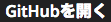

GitHubを利用した受験方法
codecheckでは、GitHubと連携することで ローカル環境で問題を回答することが可能です。 ※GitHub受験が可能な問題のみが対象です。
必須条件
- Githubアカウントが必要です
- Git (Gitの使い方はこちらをを参照してください。)
- Node.js/npmが必要です。
- GitHubアカウントでcodecheckに連携します
- 最後に
npm install --global codecheck mochaを実行することで、CLIコマンドが利用できます。
セットアップ
- 必須条件を事前に終えてください。
- 開始したチャレンジのページからを選択します。
- リポジトリ名を指定して、OKを選択します。
- リンクをクリックしてGitHubの生成されたリポジトリページへ移動します。
- 「Clone or Download」からリンクをコピーします。
- CLIから
git clone {レポジトリのリンク}で、ローカルにリポジトリを落としてきます。 - あとは好きな環境、エディタで編集して、問題を回答することができます。
テストの実行
- 問題が正しく実装できているかを確認するためにテストを実行します。
CLIで
codecheckコマンドを利用することで実行することができます。 - コマンドを実行すると、テスト結果が以下のように標準出力されます:
$ codecheck
codecheck version 0.5.3
chai@2.3.0 node_modules/chai
├── assertion-error@1.0.0
└── deep-eql@0.1.3 (type-detect@0.1.1)
Finish build: npm install (1966ms)
////////////////
テストファイルの実行結果
////////////////
codecheck: Finish with code 9
codecheck: tests : 9
codecheck: success: 0
codecheck: failure: 9
チャレンジの保存
- 回答を編集したら、masterにコミットしします。（やり方はgitのドキュメントを参照してください。）
- 次に
git push origin masterでリモートのmasterにプッシュしてください。 - 無事プッシュが完了すると、codecheck側にもmasterの編集内容が同時保存されます。
- プッシュ後に、試験の詳細画面でチャレンジが「保存」に切り替わったかを確認してください。
提出
- 解答内容を提出するには、開始したチャレンジのページにある
 ボタンを推してください。
ボタンを推してください。 - 一度解答を提出すると、再度受験することはできませんので、ご注意ください。